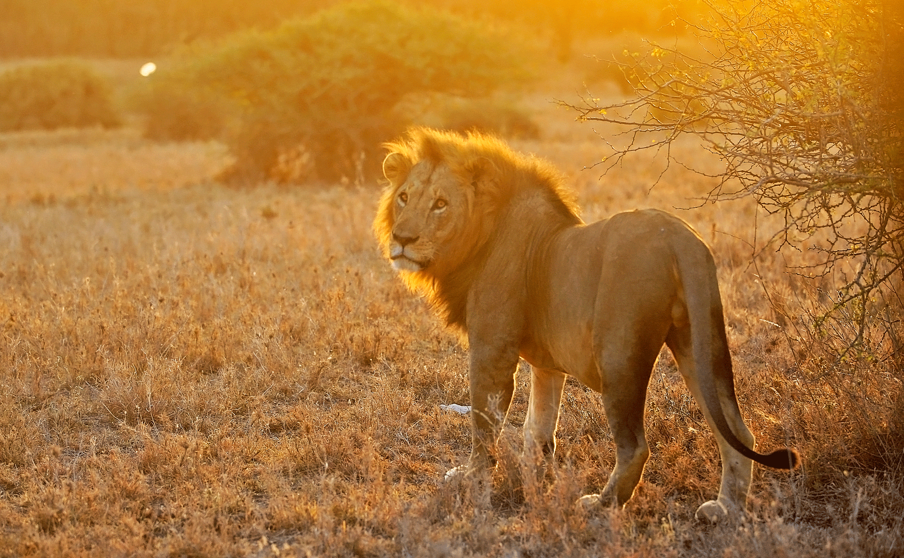

Safarii was created to make discovering Kenya’s national parks simpler, clearer, and more inspiring for travelers from around the world. Kenya is home to some of the most extraordinary wildlife destinations on the planet — from the sweeping savannahs of the Maasai Mara National Reserve to the elephant-filled plains of Amboseli National Park and the rugged wilderness of Tsavo East National Park.
Yet planning a safari often means navigating scattered information about parks, wildlife, activities, and accommodations. Safarii was built to bring all of that into one place.

Our platform allows visitors to explore Kenya’s most iconic parks, learn about the wildlife and experiences each destination offers, and discover lodges located within the parks themselves. By organizing this information into a simple and visually engaging experience, Safarii helps travelers focus on what matters most — experiencing the beauty of Kenya’s natural world.
Protecting Kenya's wildlife and natural habitats for future generations.
Promoting eco-friendly tourism practices and responsible travel.
Supporting local communities and cultural preservation